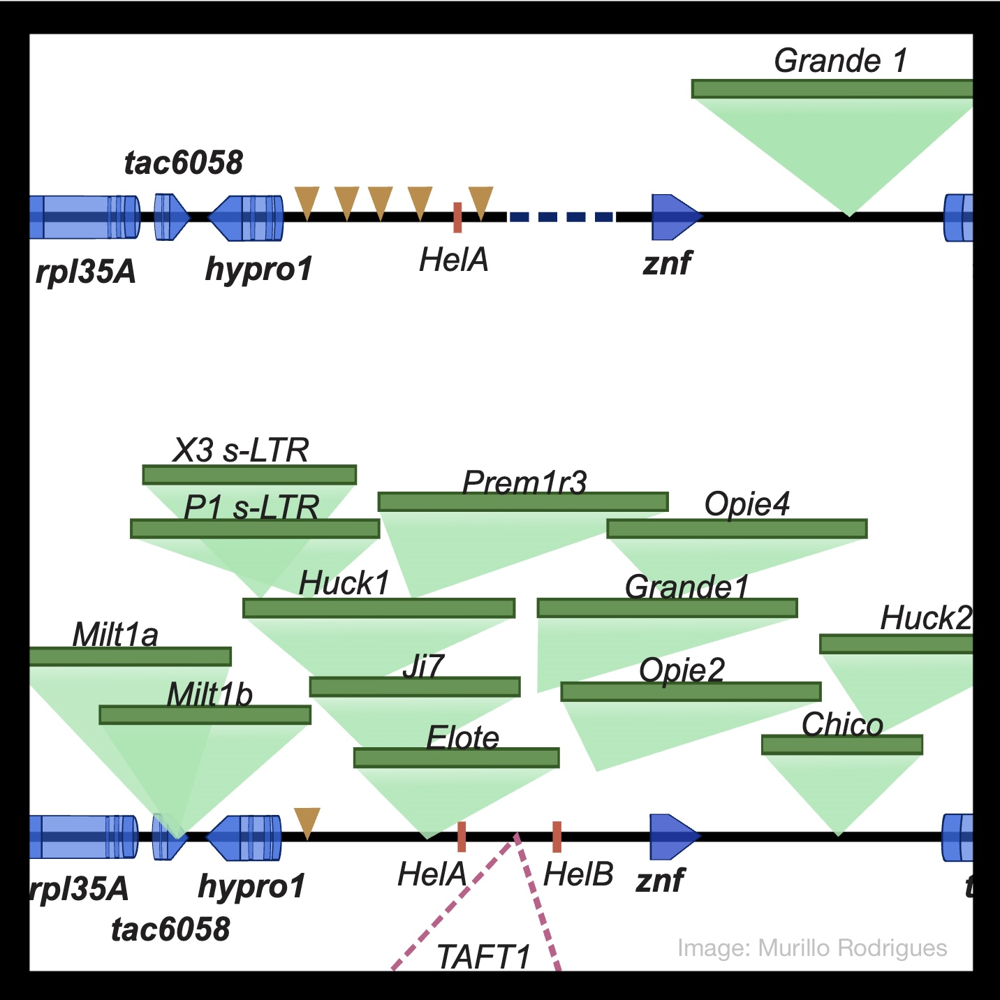

Research
Genetics of adaptation

Maize spread rapidly after domestication, adapting to a wide range of environments. Today maize is grown across a broader geographic breadth than any of the world’s other staple crops, from sea level to altitudes of \(>4,000\)m and from deserts to near-flooded conditions. The wild relatives of maize have also adapted to environments varying widely in elevation, temperature, and moisture availability. The lab works on a number of projects using maize and its wild relatives to understand the genetic basis of adaptation.
Selected Recent Publications
The utility of environmental data from traditional varieties for climate-adaptive maize breeding [preprint]
Li F, Gates DJ, Buckler ES …[8 authors]… Hearne S, Ross-Ibarra J, Runcie DENot so local: the population genetics of convergent adaptation in maize and teosinte. [preprint]
Tittes S, Lorant A, McGinty S …[4 authors]… Tenaillon MI, Ross-Ibarra JGenome sequencing reveals evidence of adaptive variation in the genus Zea [preprint]
Chen L, Luo J, Minliang Jin, Yang N …[27 authors including Phillips AR and Cameron B]… Ross-Ibarra J, Yan J.Allele-specific expression reveals multiple paths to highland adaptation in maize [preprint]
Hu H, Crow T, Nojoomi S, …[5 authors]… Estévez-Palmas JM, Ross-Ibarra J, Runcie DE.The origins and adaptive consequences of polyploidy in a dominant prairie grass. [preprint]
Phillips A, AuBuchon-Elder T, …[23 authors including Cameron B, Cryan EP, Julianna Porter]… Kellogg EA, Ross-Ibarra JTeosinte populations exhibit weak local adaptation to their rhizosphere biota despite strong effects of biota source on teosinte fitness and traits [preprint]
O’Brien AM, Sawers RJH, Gasca-Pineda J, Baxter, I, Eguiarte LE, Ross-Ibarra J, Strauss SY
Experimental Evolution

Plant domestication and modern breeding represent examples of experimentally evolved populations. Studying these populations provides an opportunity to understand not only the genetic basis of evolutionary change but also how the processes of evolution interact to shape modern genetic and phenotypic diversity.
Selected Recent Publications
Unraveling prevalence and effects of deleterious mutations in maize elite lines across decades of modern breeding
Sun S, Wang B, Li C, Xu G, Yang J, Hufford MBH, Ross-Ibarra J, Wang H, Wang LGenetic variation at transcription factor binding sites largely explains phenotypic heritability in maize [preprint]
Engelhorn J, Snodgrass SJ, Kok A, Seetharam AS …[15 authors]… Frommer WB, Ross-Ibarra J, Hartwig TGenomic Insights into Historical Improvement of Heterotic Groups during Modern Hybrid Maize Breeding
Li C, Guan H, Jing X, Li Y …[18 authors]… Ross-Ibarra J, Li Y, Wang T, Wang H
Human-Maize Coevolution.

As a domesticate maize is entirely dependent on humans for survival and dispersal. In turn, human populations became increasingly dependent on maize as a staple crop. Much of the current work in the lab investigates the dynamics of how each of these two species have impacted the evolution of the other.
Selected Recent Publications
An ancient origin of the naked grains of maize [preprint]
Fairbanks R, Ross-Ibarra JTwo teosintes made modern maize. [preprint]
Yang N*, Wang Y*, Liu X* …[20 authors including Mambakkam S and Menon M]… Stitzer MC, Runcie DE, Yan J, Ross-Ibarra J
Genome Evolution

In addition to discerning the genetic basis of phenotypic evolution, we are interested in understanding the processes that shape evolution of the genome itself. From copy number variation and inversions to the evolution of recombination rate and coevolution between transposable elements and their hosts, the diversity and evolutionary lability of genomes offers a lot to explore.
Selected Recent Publications
Genome-wide selection on transposable elements in maize. [preprint]
Liu B, Munasinghe M, Fairbanks RA, Hirsch CN, Ross-Ibarra JMolecular evolution of a reproductive barrier in maize and related species [preprint]
Cryan, E, Phinney G, Seetharam AS, Evans MMS, Kellogg EA, Zhan J, Meyers BC, Kliebenstein D, Ross-Ibarra JExtensive genome evolution distinguishes maize within a stable tribe of grasses [preprint]
Stitzer MC, Seetharam AS, Scheben A …[35 authors including Phillips AR]… Ross-Ibarra J, Romay MC, Kellogg EA, Buckler ES, Hufford MBTeosinte Pollen Drive guides maize domestication and evolution by RNAi [preprint]
Berube B, Ernst E, Cahn J …[3 authors]… Scheben A, Siepel A, Ross-Ibarra J, Kermicle J, Martienssen RA.Conflict over fertilization underlies the transient evolution of reinforcement. [preprint]
Rushworth C, Wardlaw AW, Ross-Ibarra J, Brandvain YBAdaptive evolution of DNA methylation reshaped gene regulation in maize [preprint] [github]
Xu G, Lyu J, Li Q, Liu H, Wang D, Zhang M, Springer NM, Ross-Ibarra J, Yang JThe temporal dynamics of background selection in non-equilibrium populations [preprint][github]
Torres R, Stetter MG, Hernandez R, Ross-Ibarra JThe Genomic Ecosystem of Transposable Elements in Maize [preprint] Stitzer MC, Anderson SN, Springer NM, Ross-Ibarra J